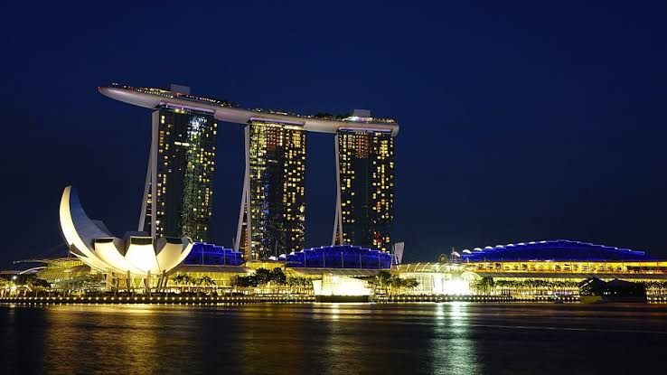

ประเทศสิงคโปร์ (Singapore)

เมืองหลวงคือสิงคโปร์ ปกครองแบบสาธารณรัฐ มีระบบเศรษฐกิจที่พึ่งพาการเงินการธนาคารระดับโลก ท่าเรือขนส่ง สินค้าเทคโนโลยี และการกลั่นน้ำมัน เด่นเรื่องนวัตกรรม ระบบการศึกษา และกฎหมายที่เข้มงวดที่สุดในภูมิภาคในยุคแรกของประวัติศาสตร์ สิงคโปร์เป็นอาณาจักรการเดินเรือที่รู้จักกันในชื่อเทมาเส็ก ต่อมาได้กลายเป็นส่วนสำคัญของอาณาจักรทาลัสโซเครติกและอยู่ภายใต้การปกครองโดยจักรวรรดิท้องถิ่นหลายแห่งสืบต่อกันยาวนาน สิงคโปร์สมัยใหม่ก่อตั้งใน ค.ศ. 1819 โดยเซอร์สแตมฟอร์ด รัฟเฟิลส์ เพื่อใข้ดินแดนนี้เป็นศูนย์กลางทางการค้าของจักรวรรดิบริติช ต่อมาใน ค.ศ. 1867 สิงคโปร์ตกอยู่ภายใต้การควบคุมโดยตรงของอังกฤษในฐานะส่วนหนึ่งของอาณานิคมช่องแคบ ก่อนจะตกอยู่ภายใต้การยึดครองใน ค.ศ. 1942 โดยญี่ปุ่นในช่วงสงครามโลกครั้งที่สอง และกลับมามีสถานะเป็นอาณานิคมของอังกฤษภายหลังการยอมจำนนของญี่ปุ่นใน ค.ศ. 1945 สิงคโปร์มีสถานะปกครองตนเองใน ค.ศ. 1959 และถูกผนวกกลายเป็นส่วนหนึ่งของสหพันธรัฐมาเลเซียร่วมกับมาลายา, บอร์เนียวเหนือ และซาราวัก ความแตกต่างทางอุดมการณ์นำไปสู่การขับสิงคโปร์ออกจากสหพันธ์ในอีกสองปีต่อมา และได้รับสถานะเป็นประเทศที่มีอำนาจอธิปไตยในฐานะรัฐเอกราชใน ค.ศ. 1965 แม้จะเผชิญกับความวุ่นวายในช่วงแรก กอปรกับอุปสรรคด้านทรัพยากรธรรมชาติและทำเลที่ตั้งของประเทศ แต่สิงคโปร์มีการพัฒนาอย่างรวดเร็วจนกลายเป็นหนึ่งในสี่เสือแห่งเอเชียสิงคโปร์เป็นหนึ่งในประเทศที่พัฒนาสูง เป็นหนึ่งในประเทศที่มีความมั่นคงทางเศรษฐกิจสูง และมีอัตราผลิตภัณฑ์มวลรวมในประเทศต่อหัวสูงที่สุดประเทศหนึ่งของโลก และมีจุดเด่นในการเป็นดินแดนภาษีต่ำ สิงคโปร์เป็นเพียงชาติเดียวในทวีปเอเชียที่ได้รับเครดิดในระดับ AAA ตามการจัดอันดับโดยสถาบันการเงินชั้นนำทั้งสามแห่ง และยังเป็นศูนย์กลางทางด้านการบิน, ธุรกิจ และท่าเรือที่สำคัญ ทั้งยังเป็นจุดหมายสำคัญสำหรับนักลงทุน รวมทั้งได้รับการจัดอันดับอย่างต่อเนื่องว่าเป็นหนึ่งในเมืองที่มีค่าครองชีพสูงที่สุดสำหรับชาวต่างชาติ ประเทศนี้อยู่ในอับดับต้น ๆ ตามการจัดอันดับในดัชนีชี้วัดทางสังคมที่สำคัญ ได้แก่ การศึกษา, การแพทย์, คุณภาพชีวิต, ความมั่นคง, โครงสร้างพื้นฐาน และที่อยู่อาศัย โดยมีอัตราการครอบครองที่อยู่อาศัยที่ร้อยละ 88 ประชากรสิงคโปร์ยังมีอัตราการคาดหมายคงชีพสูงที่สุดชาติหนึ่ง และเป็นประเทศที่มีความเร็วในการเชื่อมต่ออินเตอร์เน็ตเร็วที่สุดชาติหนึ่งของโลก รวมทั้งมีอัตราภาวะการตายของทารกต่ำ และอยู่ในอันดับสูงในด้านดัชนีภาพลักษณ์คอร์รัปชัน สิงคโปร์เป็นประเทศที่มีความหนาแน่นประชากรสูงเป็นอันดับสามของโลก แม้จะเต็มไปด้วยพื้นที่สีเขียวและพื้นที่พักผ่อนหย่อนใจจำนวนมากอันเป็นผลมาจากการวางผังเมือง และเป็นหนึ่งในประเทศที่มีความหลากหลายทางวัฒนธรรมสูงจากอัตลักษณ์ทางวัฒนธรรมของกลุ่มชาติพันธุ์หลักภายในประเทศ สิงคโปร์มีภาษาราชการสี่ภาษา ได้แก่ ภาษาอังกฤษ, ภาษามลายู, ภาษาจีนกลาง และภาษาทมิฬ โดยภาษาอังกฤษมีบทบาทหลักเป็นภาษากลางที่ใช้สื่อสารทั่วไปโดยเฉพาะในการบริการสาธารณะ และนับตั้งแต่ก่อตั้งประเทศ แนวคิดพหุนิยมทางเชื้อชาติและวัฒนธรรมมักมีอิทธิพลอย่างสูงจนถึงปัจจุบัน โดยมีบัญญัติไว้ในรัฐธรรมนูญและมีบทบาทในการกำหนดนโยบายระดับชาติ